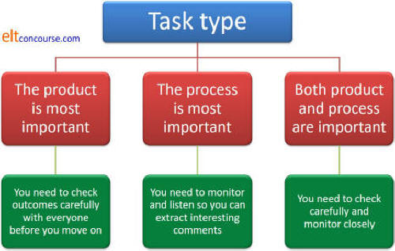

Managing feedback on / from tasks: an essential guide

Feedback is Information
The key is to decide
- What sort of information do I want to get and give?
- How much information do I need to get and give?
On
an initial training course, you'll probably learn a lot about making
classrooms centred on the learners rather than the teacher. That
is considered A Good Thing (and it probably is).
One way to make classrooms more centred on the students is to use lots
of collaborative work so that the learners work together without your
persistent presence and then feedback the outcomes somehow.
Therein lies the rub – how do you give and get feedback without
the lesson becoming teacher centred?
 |
A two-way street |
Here we shall be considering two sorts of feedback:
- Feedback you get from your learners
- Feedback you give to your learners
This is, of course, a mutual process (or should be).
 |
Identifying task types |
Here's a set of tasks you might do with students working together. Can you divide them into two sorts?
| 1 | You start a lesson on 'going to' by asking people to work in threes to come up with three things they would like to do this evening / this week etc. They make the plans and will later express them using the target structure. | 4 | You give the class three pictures that go with a text and ask them in pairs to speculate about what the text concerns and what vocabulary it might contain. |
| 2 | You have a text which contains five facts expressed in numbers. To practise scanning, you get the class to work individually to locate the numbers and make a brief note of what they refer to. | 5 | You have a reading text with some multiple-choice questions to go with it. You get the class to work in pairs to find the answers. |
| 3 | To introduce a listening text, you put up a picture of two people sitting in a café ordering from a waiter and ask the class individually to make a note of where they are and what they are doing. | 6 | For controlled practice in a lesson, you have handed out a gapped text to get the students to complete in pairs. The gaps concern the target language of the lesson, of course. |
Click here for the answer when you have had some thoughts.
Activities in which the outcome or product of the task is important:
1: you want to make sure that the ideas are
sensible or the lesson will fall apart later
2: you want to know if the class has successfully scanned the
material
5: if you use a reading text like this, it's important for you to
know how well the class has done
6: if this is the target language test, you need to know if the
learners can use it to fill the gaps accurately
The other two activities are tasks in which the process is more important than the product. You mustn't suggest this but it actually doesn't matter what they think; this was just a way to get them to think.
3: the purpose of the task is to set a
context for listening and if the picture is well chosen, it's
obvious
4: this task just gets people thinking about the text and its
content so if the pictures are well chosen, the answer will be
obvious
Now look through the 6 tasks and ask yourself two simple questions:
- If the product is important, how can I check it?
- If the process is what's important, how will I get some feedback quickly and move on?
Click here when you have some ideas to see if the suggestions which follow match your thoughts.
- Activity 1: three things they would like to do this evening
- This is an activity you can monitor carefully and then give some feedback by focusing on interesting ideas that arose. While you are monitoring, you can check that the ideas are OK. You do not need to make everyone share ideas with the whole class. People will get bored and you need to move on.
- Activity 2: five facts expressed in numbers: locate the numbers and make a note of what they refer to
- It is clearly important that you and the class know how well
they have managed to scan a text. This probably calls for
whole-class feedback but you can speed it up by having answers
prepared so you aren't writing everything on the board.
Because this is a key reading skill, you also have to elicit how the learners approached the task
The right answer is by moving their eyes quickly through the text looking for numbers and then reading the section carefully to find out what the numbers mean – understanding the whole text or reading every line is not necessary. - Activity 3: the picture: where are they and what are they doing?
- All you need is for one student to give you the correct answer. Move on!
- Activity 4: three pictures that go with a text: speculate about what the text concerns and what vocabulary it contains
- This is another activity you can monitor carefully and then give and get some feedback by focusing on interesting ideas that arose. You do not need to get everyone's ideas but you can board some of the vocabulary they suggest. The purpose is to get them to check their ideas against reality when they read the text so what the ideas are doesn't matter.
- Activity 5: a reading text with some multiple-choice questions
- Don't jump into whole-class feedback. It's quite boring to listen to other people's answers. Combine the pairs into groups of 4, or swap the pairs around, and get them to compare answers while you monitor, listening hard. That way, you can focus on the items that are causing problems. If, say, everyone got number 4 right, why bother with it? Make sure, however, that you have a way of giving the class a list of the right answers.
- Activity 6: a gapped text to get the students to complete in pairs
- As for Activity 5, allow the class to check with peers before you get stuck in a dull round-the-class feedback routine. Your focus must be on the problematic items so they check together while you monitor for issues. Again, make sure they have access to the right answers at the end.
Summary

Ask yourself the question |
When you are getting feedback on a task, ask yourself a simple question:
Why am I doing this?
| Related guides | |
| feedback to learners | for the guide in the in-service training area |
| task types | to see how the type of task may affect what you are doing |
| activity types | for a guide to the three essential forms of activities and what they do |
Click to do two easy tests to remind yourself of the key points.